|
Roda JC - FC Groningen (0-0) 28 september 2003 |
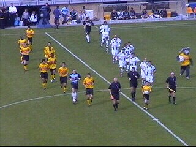
Zondag in het Zuiden....
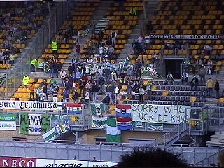
100 enthousiaste noorderlingen.
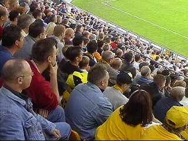
12.000 overigen.
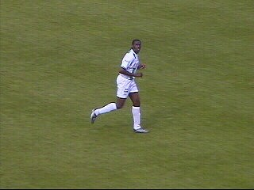
Regillio, nog niet zo lang geleden met Roda JC
tegen AC Milan, via het frauduleuze Iraklis nu in
het fantasieloze shirt van Groningen. Maar wel
nog altijd nummer 3!
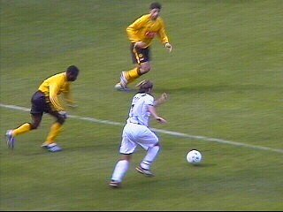
Sonko in de basis net als Vandenbroek!
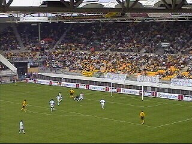
Anastasiou presteert het om vrij voor goal de lat
te raken. Maakt niet uit, was toch buitenspel.
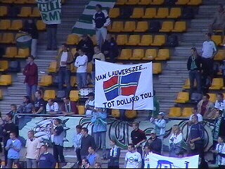
Het was leuker om naar de spandoeken van de
gasten te kijken dan naar de doodsaaie wedstrijd.
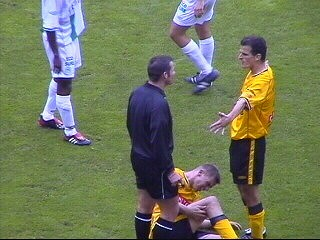
Marc Luijpers heeft een knal gehad, Filipovic
legt het nog eens uit aan Pieter Vink.
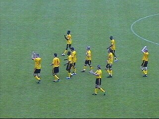
Een punt is geen punt. Veel krediet is verspeeld.
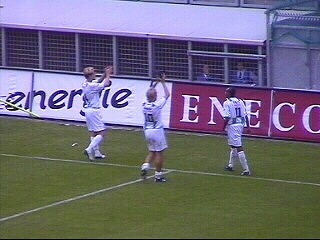
Groningen speelde eveneens onthutsend zwak
en is dan ook blij met het punt. In facto staat de
ploeg nog steeds een plaats boven Roda!
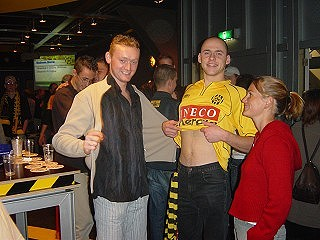
RFH terug van vakantie!
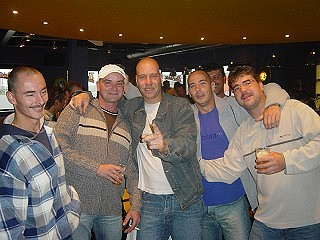
Proficiat, jullie zijn de meestgefotografeerde crew
op deze site. Daarom nog een keer:
Forza Schaesberg!
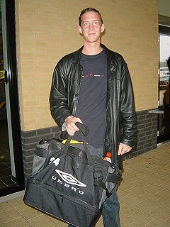
IJscoman is tegenwoordig koelie van
Fatih.
Filipovic en Vandenbroeck werden geselecteerd om de
Kick Off te bezoeken.